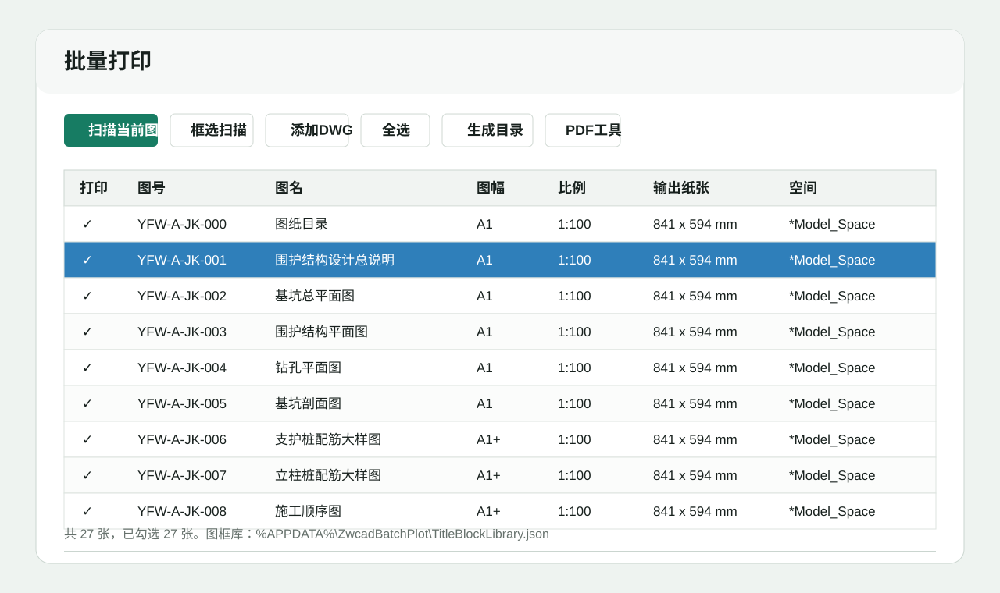
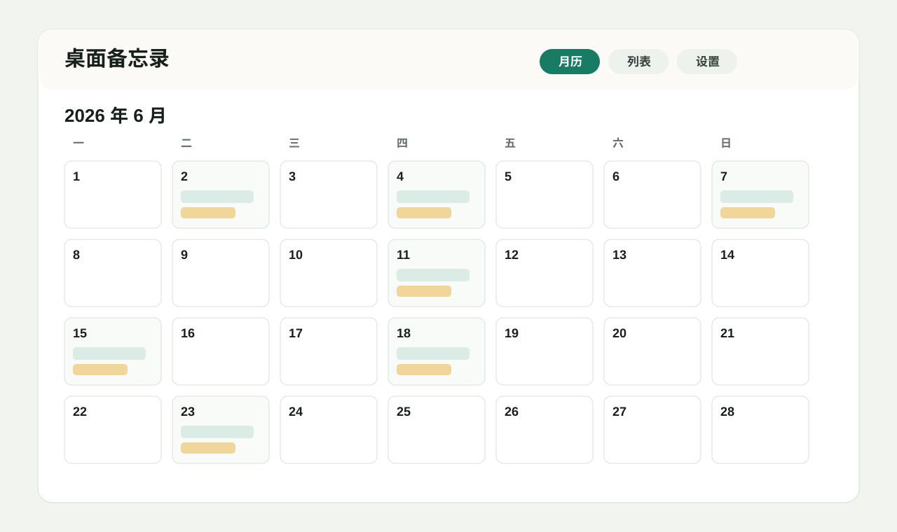

Windows 工具 / CAD 插件 / 个人效率软件
把日常高频使用的软件，
打磨成可持续更新的产品。
这里整理我正在维护的软件、最新版本和下载入口。 当前主要发布中望 CAD 批量打印插件与 DesktopMemoWin 桌面备忘录。

Software
当前发布的软件
Release Notes
Windows 工具 / CAD 插件 / 个人效率软件
这里整理我正在维护的软件、最新版本和下载入口。 当前主要发布中望 CAD 批量打印插件与 DesktopMemoWin 桌面备忘录。

Software

Release Notes